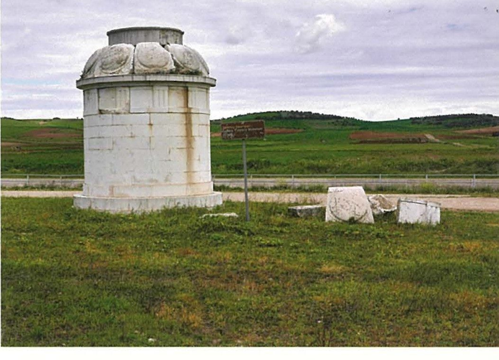

Spartan society to the Battle of Leuctra 371 BC · Lesson 28
Decline and defeat: the Battle of Leuctra, 371 BC
Why could Sparta not survive one defeat in 371 BC — and did Leuctra cause Sparta’s decline, or reveal it?
Year 12 Ancient History · Section II, Option G · Present with → or space · Read on a phone with R

Connect · 3 minutes · cold call
From marriage to manpower
Spartan marriage customs served the state’s need for citizens: Plutarch and Xenophon both show it — though only Plutarch, writing centuries later, tells of the bride’s “kidnapping”.
What happened when there were not enough citizens? In 371 BC one battle broke Spartan power. Was the defeat the cause of Sparta’s decline — or did it show a decline that had already happened?
One key idea from Lesson 27, in one sentence.
Learning intentions and success criteria · 2 minutes
Today’s goals
- assess the causes and significance of Sparta’s defeat at Leuctra
- connect features of Spartan society to its decline
- explain three causes of Sparta’s weakness by 371 BC with evidence
- explain the consequences of Leuctra for Spartan society
- judge whether Leuctra caused Sparta’s decline or revealed it, using named sources
- plan a 12-mark answer on Spartan social structure that links to decline
Oliganthropia: a shortage of men — the shrinking number of full Spartan citizens. Hegemony: leadership or domination of other states. Boeotia: the region of central Greece whose chief city was Thebes.
Note-making · today’s routine
How to structure your notes
questions and key terms
short phrases, arrows (→ led to), abbreviations (Sp. = Spartiates)
- 1Listen and look firstDon’t copy while the slide is being explained.
- 2Write your own notes at each ✎ checkpointPhrases, not sentences. Arrows for cause and effect.
- 3Compare with the model notesThey appear one row at a time. Add what you missed in a second colour.
- 4Copy each cue question into the left columnLater, cover your notes and answer the cue questions from memory.
- 5Finish with a three-sentence summaryFive checkpoints: power abroad · problems at home · the battle · after Leuctra · caused or revealed?
Key vocabulary
Words you will use today
| Power and decline | Meaning |
|---|---|
| oliganthropia | a shortage of men: the shrinking number of full Spartan citizens |
| hegemony | leadership or domination of other states |
| harmost | a Spartan governor placed in another Greek city — used widely after 404 BC |
| hypomeiones | ‘men of lesser status’: probably Spartiates who had lost full citizen rights |
| Common Peace | a treaty meant to bind all the Greek states at once; the King’s Peace (387/6 BC) was the first |
| Cadmea | the citadel of Thebes, named after its legendary founder Cadmus |
| The battle and after | Meaning |
|---|---|
| Boeotia | the region of central Greece whose chief city was Thebes |
| Boeotarch | one of the elected commanders of the Boeotian League |
| phalanx | hoplites drawn up shoulder to shoulder in a close formation, several ranks deep |
| trophy (tropaion) | a monument the victors set up where the enemy turned to flee |
| Gymnopaedia | a summer festival of Apollo at Sparta, with choruses of boys and men |
| Messene | the city of the freed Messenians, refounded on Mt Ithome in 370/69 BC |
Spelling: Cooley’s translations use Greek forms (Leuktra, Kleombrotos, Boiotia, Kinadon, Phoibidas, Gymnopaidiai, Kadmeia, Knidos, Orchomenos). In your own writing use Leuctra, Cleombrotus, Boeotia, Cinadon, Phoebidas, Gymnopaedia, Cadmea, Cnidus, Orchomenus.
1 · Sparta after 404 BC · I do — the story in time
From victory to defeat, 404–369 BC
1 · Sparta after 404 BC · We do — two later writers
Leaders of Greece — for scarcely twelve years
[1] In Greece, the Lakedaimonians having put an end to the Peloponnesian War were acknowledged by all as holding the leadership by both land and sea. Appointing Lysander as navarch, they ordered him to journey around the city-states, installing in each officials they called harmosts, since the Lakedaimonians objected to democracies and wished to control the city-states through oligarchies. [2] They imposed tributes on those they had beaten in war, and though they had not used coined money before this time, they now collected each year more than one thousand talents in tribute.
Diodorus, Library of History 14.10.1–2 · a Greek historian from Sicily, active 60–36 BC · trans. in Cooley H45
The Lakedaimonians spent a long time competing for hegemony over the Greeks, but after they gained it they maintained it without dispute for scarcely twelve years.
Polybius, Histories 1.2 · a Greek historian of Rome’s rise, 2nd century BC · trans. in Cooley H46
How did Sparta rule Greece after 404 BC?
Through harmosts and friendly oligarchies, with tribute of “more than one thousand talents” a year — a flood of money into a state that “had not used coined money before this time”.
Which twelve years does Polybius mean?
Cooley: from Aegospotami (405 BC), which won the war, to Cnidus (394 BC).
Ruling Greece took men and money, and Sparta had fewer citizens each generation (section 2). Xenophon later complained that Sparta’s “leading citizens” now wanted to be “governors of foreign communities” (Cooley E70).
1 · Sparta after 404 BC · I do — map think-aloud
Boeotia and the Leuctra campaigns, 385–369 BC
- 1Thebes and the CadmeaPhoebidas seized the citadel in 382 BC; the Thebans, helped by Athenians, freed it in 379/8 BC (Cooley H59, H62–H63).
- 2Orchomenus and Tegyra375 BC: a Theban force beat a Spartan force twice its size (H66).
- 3Leuctra371 BC: the battle, in Boeotia south-west of Thebes (E106–E112).
- 4Mantinea and TegeaSparta split Mantinea into villages in 385 BC; refounded in 370 BC, it led a new Arcadian League against Sparta with Tegea (H57–H58, H72, note on B31).
- 5Into Laconia370/69 BC: the Thebans and their allies invade; Sparta has no walls (K5, E69).
- 6MesseneRefounded on Mt Ithome in 370/69 BC: Messenia is lost to Sparta (H71).
Notes checkpoint 1 of 5
Power abroad, 404–371 BC
Write your own notes first. Then compare, row by row, and add what you missed in a second colour.
2 · Problems at home · We do — a warning sign (recall Lesson 7)
c. 399 BC: how many Spartiates in the agora?
When the ephors asked how he said the plan would be carried out, the informant said that Kinadon had taken him to the edge of the agora and told him to count how many Spartiates were in the agora. “And I,” he said, “counted the king, the ephors, the members of the gerousia, and about forty others, and asked ‘Why did you tell me to count them, Kinadon?’ He said, ‘Imagine that these are your enemies, and all the others are your allies – more than four thousand of them in the agora.’”
Xenophon, Hellenika 3.3.5 (part) · Xenophon lived c. 430–c. 350 BC; the Hellenika covers 411–362 BC · trans. in Cooley E53a
How many Spartiates did the informer count?
About 75: Cooley adds them up as “gerousia (30) + 5 ephors + 40 against 4,000”.
What does the count suggest?
That Spartiates were a small minority, even in the agora. Cooley: “even in the city of Sparta the Spartiates were probably a small minority”.
This is the informer’s report of Cinadon’s claims, and Cooley warns that Cinadon “has every reason to exaggerate the discrepancy in numbers on each side”.
2 · Problems at home · We do — Aristotle on land and the messes
Land in few hands — and the price of a mess place
For some of them have come to attain too much property, and others a tiny amount. Therefore the land has fallen into the hands of a small minority … And it is the case that almost two-fifths of the whole country is owned by women, since many women inherit and because of the giving of large dowries
Aristotle, Politics 2.9, 1270a15–29 (part) · written 330s–320s BC · trans. in Cooley D54
but with the Lakedaimonians everybody has to contribute, even those who are very poor and unable to afford this expense … For it is not easy for the very poor to participate, but the ancient mark of citizenship for them is that anyone who cannot pay this tax cannot belong.
Aristotle, Politics 2.9, 1271a26–37 (part) · trans. in Cooley D62
Such men were probably among the hypomeiones: Cooley says they were “presumably descendants of homoioi who had lost their status”, perhaps through poverty. And “Equality among Spartiates was, however, never more than an ideal.”
2 · Problems at home · I do — Source 14.1
Source 14.1: “a single blow”
As a result, although the land could support one thousand five hundred cavalry and thirty thousand hoplites, the total number was not even one thousand. What has actually taken place has made it clear that their arrangements in this were at fault, given that the state did not withstand a single blow but was destroyed through its oliganthropia. …
However it is clear that if many sons are born, and the land divided accordingly, there will inevitably be many poor men.
Aristotle, Politics 2.9, 1270a29–1270b6 (part) · written 330s–320s BC, a generation after Leuctra · trans. in Cooley D28
| OVPRL | |
|---|---|
| O | Aristotle (384–322 BC) wrote a generation after Leuctra. The “single blow” is generally taken to be Leuctra itself. |
| V | The gap: land for “one thousand five hundred cavalry and thirty thousand hoplites”, but “not even one thousand” citizens. |
| P | He studied constitutions to find their faults; Cooley says his criticism is “informed by Sparta’s decline in the fourth century”. He blames the laws on property and inheritance. |
| R | He knew how the story ended, so he may be reading the cause back from the result. |
| L | He gives no dates for the decline. Cooley’s table of numbers (next slide) supplies them. |
2 · Problems at home · I do — recall Lesson 7’s chart
How many Spartiates? Counts and estimates
Xenophon: “it was the very richest who bred the horses”, while the riders were “the most incapable physically” — so “at that time their cavalry were an absolute disgrace” (E107).
Which are counts, and which are estimates?
Ancient writers give 8,000 (480 BC, in a speech in Herodotus) and Aristotle’s “not even one thousand”; 3,500 (418 BC) is calculated from Thucydides’ description of the army, and Cooley thinks it may be halved. The 2,500 (394 BC) and c. 1,500 (371 BC) are modern estimates.
Did battles cause the fall?
Rarely: casualties “were comparatively low by classical Greek standards”, except the earthquake of c. 464 BC. Because citizens fell, not the whole population, Cooley says the decline “probably reflects a social-demographic change”.
Notes checkpoint 2 of 5
Problems at home
3 · The Battle of Leuctra · We do — why fight in 371 BC?
371 BC: the road to Leuctra
[28.1] Agesilaos noticed that all the other Greeks were listening carefully to Epaminondas and admired his sentiments, so he asked him whether he thought that it would be just and equal for the towns of Boiotia to govern themselves. Instantly Epaminondas replied boldly by asking him in return whether he thought it just and equal for the towns of Lakonia also to enjoy independence. … [28.2] … Agesilaos was so furious that he used this as a pretext to erase the name of the Thebans out of the peace treaty and to declare war on them.
Plutarch, Life of Agesilaos 28.1–2 (part) · written c. AD 100 · trans. in Cooley H67
Why was Thebes left out of the Common Peace?
Thebes would not let the towns of Boeotia govern themselves unless Sparta did the same for Laconia’s towns — so Agesilaus struck the Thebans out of the treaty.
Cooley: Sparta’s claim to champion Greek freedom contrasted “with their treatment of their own perioikic towns”.
King Cleombrotus led a Spartan and allied army into Boeotia; Leuctra came “only twenty days later” (Plutarch, H68). The Theban commander was Epaminondas, one of the Boeotarchs.
Cooley: “Xenophon, though contemporary, gives his account entirely from the Spartan side”; “Plutarch gives the best account from the Theban perspective”.
3 · The Battle of Leuctra · I do — the battle, step by step
Leuctra, 371 BC: a deep left against the Spartan right
- 1The Spartan lineCleombrotus on the right, where the best troops usually stood.
- 2Cavalry in frontTheban “in good order”; Spartan “an absolute disgrace” (E107).
- 3Twelve deep“not more than twelve men deep”, “it was said” (E109).
- 4Fifty deep“at least fifty shields deep”, aimed at the king (E109).
- 5A wing held backDiodorus: the weakest troops give ground (E108).
- 6Pelopidas strikes“with his band of three hundred” (Plutarch, E110).
- 7The king fallsThe Spartan right breaks; Cleombrotus is carried off still alive (E109) and dies (Plutarch, H68).
3 · The Battle of Leuctra · We do — Source 14.2
Source 14.2: two accounts of Leuctra
[12] … As for the infantry, it was said that the Lakedaimonians led each half-company into battle three files abreast and that, as a result, the phalanx was not more than twelve men deep. On the other hand, the Thebans were drawn up in a formation of at least fifty shields deep, reckoning that if they could conquer the area around the king, then the rest would be easy to overcome. …
[15] However, when the polemarchs saw that the whole number of the Lakedaimonians (of nearly a thousand in total) had been killed and that also four hundred of the seven hundred Spartiates present had fallen, they realised that none of their allies had any spirit left for fighting and, indeed, that some of them were not upset with the way the battle had gone.
Xenophon, Hellenika 6.4.12, 15 (part) · an Athenian (c. 430–c. 350 BC) who served under Agesilaus; the Hellenika covers 411–362 BC · trans. in Cooley E109
[4] However in this battle Epaminondas and his phalanx bore down on them alone, neglecting the other Greeks, and Pelopidas fell upon them with such incredible speed and boldness that their spirit and skill were so broken that there began such a flight and slaughter of the Spartans that had never been seen before.
Plutarch, Life of Pelopidas 23.4 · written c. AD 100 by a Boeotian from Chaeronea · trans. in Cooley E110
What do both describe?
A crushing Spartan defeat: Xenophon counts the dead; Plutarch describes a slaughter “that had never been seen before”.
What does each leave out?
Xenophon never names Epaminondas or Pelopidas. Plutarch’s extract gives no depths and no casualty figures.
3 · The Battle of Leuctra · We do — the chapter’s OVPRL questions
Xenophon and Plutarch: who to trust for what?
| Xenophon, Hellenika (E109) | Plutarch, Pelopidas (E110) | |
|---|---|---|
| Origin | A contemporary: he lived through Leuctra, fought for Agesilaus, and had “reason to be grateful to Agesilaos and Sparta” (Cooley). | Wrote over 400 years later; a Boeotian, writing the Life of a Theban hero. |
| Value | The depths of the two phalanxes, the cavalry, and the Spartan dead: 400 of the 700 Spartiates present. | The Theban plan: Epaminondas’ attack on the Spartan right, and Pelopidas’ charge. |
| Purpose | A history told “entirely from the Spartan side”: why might he leave out Epaminondas? | Praise of Pelopidas, who “won as much glory as Epaminondas did for the victory”. |
| Reliability | He admits some allies were “not upset with the way the battle had gone” — an admission against his own sympathies, so all the more believable. | Calls the Spartans “the best drilled soldiers”: their defeat makes the Thebans greater. |
| Limitations | Reports the depths as hearsay (“it was said”); never names Epaminondas. | Late: we cannot check where he found his details. |
Why did only seven hundred Spartiates fight? Section 2 answers it: Aristotle’s oliganthropia, and Cooley’s table.
3 · The Battle of Leuctra · the dead If time
Burying the dead: a secret revealed
Epaminondas, being aware that the Lakedaimonians were always inclined to conceal their misfortunes, said that he would allow their allies to recover their dead first, and that after they had taken them away he thought it right for the Lakedaimonians to bury their dead. [12] Some of the allies did not do this at all because none of the dead were theirs, while it was obvious that others had a small number of dead. So when the Lakedaimonians buried their dead, it was proven clearly that the dead were Spartiates. Of the Thebans and those Boiotians who stood with them, forty-seven men died, of actual Lakedaimonians, more than one thousand.
Pausanias, Description of Greece 9.13.11–12 (part) · 2nd century AD · trans. in Cooley E111
What does the story suggest about Spartan secrecy?
That Spartans were known for hiding their losses — so Epaminondas made sure every Greek could see how many Spartiates had died.
Plutarch: “Among them were King Kleombrotos and the bravest of the Spartan warriors” (H68).
400 of the 700 Spartiates present died. If Cooley’s estimate of about 1,500 Spartiates in 371 BC is right, that was more than a quarter of the whole citizen body.
3 · The Battle of Leuctra · Source 14.3 If time
Source 14.3: the Theban trophy at Leuctra
| OVPRL | |
|---|---|
| O | Built by the winners after 371 BC on the battlefield; what stands today is a modern reconstruction. |
| V | Xenophon says that after the battle “the Thebans set up a trophy” (E109): the monument marks the place he describes. |
| P | Victory needed a monument. A Theban inscription, probably a gravestone, boasts that “Thebans are superior in war” (Cooley B30 — a stone found at Thebes, not the trophy). |
| R | Which blocks are ancient? The textbook does not say, so we cannot treat the whole monument as evidence. |
| L | It shows where, and that, the Thebans won — not why Sparta lost. |
Check for understanding · gesture vote · hold up 1–4 fingers
Which of these does Xenophon’s account of Leuctra not mention?
- 1The depth of the Theban formation
- 2The Spartan cavalry
- 3Epaminondas
- 4How many Spartiates died
Cooley: Xenophon “does not once in his whole account mention Epaminondas”. He gives the depths, the cavalry and the dead.
Notes checkpoint 3 of 5
The Battle of Leuctra, 371 BC
4 · After Leuctra · I do — Source 14.4
Source 14.4: the news reaches Sparta
The man bringing news of the disaster arrived at Lakedaimon on the last day of the Gymnopaidiai while the men’s chorus was inside. The ephors when they heard of the disaster were naturally grief-stricken, but they did not take them off stage, but allowed them to complete the competition. Furthermore, although they gave the names of the dead to their relatives, they gave orders that the women bear their suffering in silence and avoid cries of mourning. And so, on the following day, those whose relatives had been killed could be seen in public with bright and cheerful faces, while those whose relatives had been reported as living (of whom there were few to be seen), these few were walking around gloomy and despondent.
Xenophon, Hellenika 6.4.16 · Cooley: “Xenophon probably witnessed the events he describes here” · trans. in Cooley E112
| OVPRL | |
|---|---|
| O | Xenophon was probably in Sparta at the time — an eyewitness, and a friend of Sparta. |
| V | The ephors’ authority: the festival went on, and they gave orders about mourning. And the place of festivals in Spartan life. |
| P | Is he praising Spartan discipline, or showing its cost? The scene supports both readings. |
| R | It fits the honour Spartans gave the war dead (Tyrtaeus; Lesson 11). |
| L | The women appear only as people ordered to be silent: we never hear them. |
4 · After Leuctra · I do — the invasion of Laconia
370/69 BC: an army in Laconia, and Messenia lost
The Spartiates, living in a city without walls, were posted at intervals, one here, another there, and so kept guard – although they were what they appeared to be, very few in number. The authorities also passed a decree announcing to the helots that whoever wished to take up arms and join the ranks, they should be given a solemn pledge of freedom in return for their assistance in the war. [29] More than six thousand helots, it is said, enrolled themselves. This aroused a new fear, as when they were marshalled together, their number was considered excessive.
Xenophon, Hellenika 6.5.28–29 (part) · the Theban invasion of 370/69 BC · trans. in Cooley E69
… he advised the Arkadians and his other allies to refound Messene which for many years the Lakedaimonians had kept uninhabited … Epaminondas sought out the remnants of the Messenians, and founded Messene … He divided the land among them
Diodorus, Library of History 15.66.1 (part) · 1st century BC · trans. in Cooley H71
Why is Sparta’s offer of freedom to helots so revealing?
Sparta now needed helots to defend itself — and feared them once they were armed: “their number was considered excessive”.
Why does Cooley call the move into Messenia “terminal damage”?
Epaminondas “could surely have captured Sparta. Instead he inflicted terminal damage on Sparta by turning instead to Messenia”: with Messenia went much of the land, and many of the helots, that had supported the Spartiates.
Some perioikoi had urged the Thebans on, “insisting that they would revolt” (E59) — yet Cooley thinks many helots and perioikic communities probably stayed loyal. And Xenophon never directly mentions the refounding of Messene.
Notes checkpoint 4 of 5
After Leuctra
5 · Caused or revealed? · I do — the evidence on each side
Did Leuctra cause Sparta’s decline, or reveal it?
| Leuctra revealed a long decline | Leuctra caused a sudden collapse |
|---|---|
| Spartiates fell from 8,000 in 480 BC (a figure in a speech in Herodotus) to an estimated c. 1,500 by 371 BC; only 700 were present at Leuctra.Cooley’s table (D29) · Xenophon (E109) | 400 of those 700 Spartiates died in one battle, with King Cleombrotus.Xenophon (E109) · Plutarch (H68) |
| Land was already in a few hands, and a poor man who could not pay his mess dues lost his citizenship — though Aristotle wrote a generation after the battle.Aristotle (D54, D62, D28) | Losing Messenia in 370/69 BC took away much of the land, and many of the helots, whose produce fed the messes.Diodorus (H71) · Cooley, note on E69 |
| According to the informer’s report of Cinadon’s claims, helots, neodamodeis, hypomeiones and perioikoi hated the Spartiates (c. 399 BC) — claims Cooley says Cinadon had “every reason to exaggerate”.Xenophon (E53a–b) | Some perioikoi offered to revolt, and Sparta had to offer helots freedom to fight.Xenophon (E59, E69) |
| At Tegyra (375 BC) a Theban force beat a Spartan force twice its size.Diodorus (H66) | The boast of never losing an infantry battle broke, and allies lost heart.Pausanias (F8) · Xenophon (E109) |
5 · Caused or revealed? · We do — the cause-and-effect chain · 10 minutes
Before, during, after: a source on every arrow
5 · Caused or revealed? · We do — how writers explained the fall
Four ancient explanations — and a modern one
“modern Lakedaimonians obey the laws of neither the gods nor Lykourgos”. Cooley heads it c. 380 BC, but chapter 14 “is generally considered later”: it “must surely represent Xenophon’s disillusionment with Sparta after the catastrophic defeat at Leuktra”.Constitution of the Lakedaimonians 14 · trans. B. Wilson · Cooley E70
Inheritance and dowries put land in few hands, so the state “was destroyed through its oliganthropia”.Politics 1270a · Cooley D54, D28
Spartans later blamed King Agesilaus, whose frequent campaigns against the Boeotians “made them a match for the Lakedaimonians”; Antalcidas joked, “Now you are getting a fat teacher’s fee from the Thebans”.Life of Lykourgos 13.6 · trans. B. Wilson · Cooley H69
“Before Leuktra, no setback had ever befallen the Lakedaimonians”. Even a later victory, Plutarch says, “clearly revealed the present weakness of Sparta”.Pausanias 1.13.5 · Cooley F8 · Plutarch, Agesilaos 33 · Cooley E113
“Ancient authors generally prefer the idea that Sparta’s decline was due to a neglect of her ancient customs”, but one might suggest the reverse: “Sparta could not actually halt the decline precisely because she maintained the old laws for too long and did not react to social changes within her society.”
Check for understanding · gesture vote
“Leuctra caused Sparta’s decline.”
Caused it
Both
Revealed it
Be ready to justify your vote with one named source.
Notes checkpoint 5 of 5
Caused or revealed?
Finish your notes
Summary: three sentences
- Why was Sparta weak by 371 BC?
- What happened at Leuctra and after it?
- Did Leuctra cause Sparta’s decline, or reveal it?
By 371 BC Sparta still led the Peloponnese, but its citizen body had shrunk from 8,000 in 480 BC to an estimated 1,500, probably because land had passed into a few hands and poor men lost their mess places and their citizenship. At Leuctra, Epaminondas’ deep column broke the Spartan right, killing King Cleombrotus and 400 of the 700 Spartiates present, and in 370/69 BC the Thebans invaded Laconia and refounded Messene, taking away much of the land and many of the helots that had supported the Spartiates. Leuctra did not begin the decline, which the falling numbers show was decades old, but it exposed it and turned it into a permanent collapse.
6 · Answering HSC questions
Back to the 12-mark question from Lesson 8
25 marks, about 45 minutes — about 1.8 minutes a mark. 12 marks ≈ 22 minutes.
Draw conclusions from named evidence — and say how far that evidence can be trusted.
Lesson 8 took HSC 2024 Q11(d) apart. Today you plan it in 23 minutes, then compare with a model plan and one model paragraph that links social structure to decline.
Then a second question, HSC-style: did Leuctra cause Sparta’s decline, or reveal it?
HSC 2024 · Section II · Question 11 (d) · 12 marks
What does evidence reveal about Spartan social structure during this period? Support your response using evidence from relevant sources.
You do — recall Lesson 8’s deconstruction, then plan it yourself.
HSC 2024 Q11(d) · recap of Lesson 8’s deconstruction
What the question wants — and what the markers rewarded
Start from named evidence and say what it shows — not a tour of the groups.
Spartiates, inferiors, perioikoi, helots, women — and how they related.
To 371 BC: Spartiates fell from 8,000 (480 BC) to an estimated c. 1,500.
Named writers and objects, with dates — written and archaeological.
| Marks | Criteria (2024, part (d)) — top two bands |
|---|---|
| 10–12 | Provides an informed explanation of what evidence reveals about the relevant aspect of society during this period · Demonstrates detailed knowledge and understanding relevant to the question · Integrates evidence from a range of relevant sources to support the response · Communicates effectively using a range of appropriate historical terms and concepts |
| 7–9 | Provides an explanation of what evidence reveals about the relevant aspect of society during this period · Demonstrates knowledge and understanding relevant to the question · Uses evidence from a range of relevant sources to support the response · Communicates using appropriate terms and concepts |
clearly connect a range of relevant written and archaeological evidence to provide a detailed and informed explanation of the Spartan social structure (d)
integrating/using sources in the response rather than just referring to writers in a generic way (d)
Source: NESA, 2024 HSC Ancient History Marking Guidelines (Section II, part (d)) and the 2024 marking feedback for Question 11, quoted exactly.
HSC 2024 Q11(d) · You do · 23 minutes · press K for the timer
Plan: What does evidence reveal about Spartan social structure during this period? (12 marks)
- a thesis that says what the evidence reveals — and links social structure to Sparta’s strength and decline
- three paragraphs, each with a claim and named evidence (Cooley codes)
- one sentence in each paragraph on the limits of the evidence
- a one-sentence conclusion that returns to the thesis
Start: “The evidence reveals a society that called its citizens ‘equals’ but was …”
Use today’s lesson: the shrinking citizen body, land and the messes, Cinadon — and Lessons 7 and 8 on the groups below.
HSC 2024 Q11(d) · a model plan, annotated (1 of 3) · MR-10, corrected for this site
The thesis and the first paragraph
| Move | Claim, evidence and the limits of the evidence |
|---|---|
| Thesis | Evidence reveals a highly stratified society in which a shrinking body of homoioi depended on — and at times feared — the far larger groups beneath them; but because most of the evidence comes from outsiders and later writers, it shows the Spartiates far more clearly than the perioikoi and helots. |
| 1 · The homoioi and the price of citizenship | Claim: full citizens called themselves ‘equals’, but citizenship depended on the training, a mess place and land — and could be lost. Evidence: Cinadon was “not one of the equals (homoioi)” (Xenophon, Hell. 3.3.5, Cooley E53a) · the messes (Xenophon, Lak. Pol. 5, D61) and their dues (Aristotle, D62) · Plutarch’s 9,000 equal lots (Lyk. 8, D57) · the hypomeiones, ‘men of lesser status’, probably men who had lost their status (E53a; Cooley, note on E53b) The evidence: Plutarch’s equality is late and idealised (c. AD 100); Xenophon, a contemporary, shows the cracks. |
Why it works
HSC 2024 Q11(d) · a model plan, annotated (2 of 3) · MR-10, corrected for this site
The second paragraph: the groups below
| Move | Claim, evidence and the limits of the evidence |
|---|---|
| 2 · The groups below: helots and perioikoi | Claim: Spartiates controlled the helots by force and relied on the perioikoi for goods and services — yet both groups are seen almost entirely through Spartan or outsiders’ eyes. Evidence: the Messenians bring “Half of all the produce the ploughland bears” (Tyrtaeus frs 6–7, A6) · the krypteia (Plutarch, Lyk. 28, D44) · the 2,000 helots who vanished, undated (Thucydides 4.80, E68) · Myron’s dog-skin cap (D41: late and hostile) · perioikoi “personally free, but politically their communities were subject to Sparta” (Cooley) · Cinadon’s claimed allies (E53a) The evidence: few written references to the perioikoi; archaeology from Laconia (iron, marble, murex; harbours such as Gytheion) fills part of the gap. |
Why it works
HSC 2024 Q11(d) · a model plan, annotated (3 of 3) · MR-10, corrected for this site
The third paragraph — and the link to decline
| Move | Claim, evidence and the limits of the evidence |
|---|---|
| 3 · Women, wealth and the shrinking citizen body | Claim: the position of Spartan women and the concentration of land reveal inequality inside the citizen class itself. Evidence: Aristotle: “almost two-fifths of the whole country is owned by women” and “the land has fallen into the hands of a small minority” (Politics 1270a, D54) · Xenophon on girls’ training (Lak. Pol. 1.3–10, D68) · Cynisca’s Olympic chariot victory, 396 or 392 BC (C55) · Aristotle: the state “was destroyed through its oliganthropia” (D28) The evidence: Aristotle and Plutarch write as non-Spartans struck by how different Spartan women were — their stereotypes are part of the evidence. |
| Conclusion | The evidence reveals a society of ‘equals’ that was never equal — and whose inequalities shrank the citizen body until one defeat at Leuctra could break it; what it reveals least clearly is the experience of the majority who were not citizens. |
Why it works
HSC 2024 Q11(d) · one model paragraph, annotated · written for this lesson
Paragraph 3, written out: social structure and decline
Model written for this lesson · one body paragraph of a 12-mark answer · about 190 words
Marker’s margin
HSC 2024 Q11(d) · Self-mark and peer check
Check your plan
Swap plans. Does your partner’s plan use at least three of the six points in NESA’s 2024 “answers could include” list: stratification despite the homoioi · Plutarch’s Life of Lycurgus · women (Aristotle, Plutarch) · few references to the perioikoi · Cinadon · Laconian archaeology?
NESA’s list says Xenophon “demonstrates” that non-citizens were unhappy. Cooley says these are Cinadon’s claims, which he had “every reason to exaggerate”: write “Xenophon reports Cinadon’s claim that …”.
HSC-style · written for this lesson · 12 marks
To what extent did the Battle of Leuctra cause Sparta’s decline, rather than reveal it? Support your response using evidence from relevant sources.
Not from a past paper. NESA calls “to what extent” self-explanatory: it asks for a judgement, as ‘assess’ does — “Make a judgement of value, quality, outcomes, results or size.”
HSC-style · a plan in five moves · written for this lesson
Caused or revealed? A plan
| Move | Point | Evidence | → Judgement |
|---|---|---|---|
| Thesis | Leuctra did not begin Sparta’s decline, which the falling citizen numbers show was decades old, but it turned a slow weakness into a permanent collapse, because losing Messenia took away much of the land and helot labour on which citizenship rested. | ||
| 1 · It revealed | the citizen body was already small and shrinking | Cooley’s table (D29): 8,000 → est. c. 1,500; 700 present (E109) · land (D54) and mess dues (D62) · Cinadon, as the informer reported him (E53a–b) · Tegyra (H66) | a long decline; but Aristotle wrote after 371, and two figures are estimates |
| 2 · It caused | one battle, then one invasion, broke the system | 400 of 700 dead and the king (E109, H68) · invasion, perioikoi (E59), helots armed (E69) · Messene refounded (H71); “terminal damage” (Cooley) · allies (E109); the boast ends (F8) | a sudden collapse; Xenophon never directly mentions the refounding of Messene |
| 3 · How they explained it | ancient v. modern explanations | Xenophon (E70: the laws neglected, probably written after Leuctra) · Aristotle (D28: the laws themselves) · Plutarch (H69: Spartans blamed Agesilaus) · Cooley: “maintained the old laws for too long” | the ancients explain it morally; the evidence points to the social structure |
| Conclusion | Leuctra revealed the decline and caused the collapse: the Messenians’ freedom, Cooley says, reduced Sparta to “a middling power of small significance”. | ||
Practice and review · 1 of 6 · sequencing
Put these in order, earliest first
Write the letters in order and a date beside each.
- AEpaminondas refounds Messene
- BCinadon’s conspiracy is uncovered
- CAthens surrenders, ending the Peloponnesian War
- DPhoebidas seizes the Cadmea at Thebes
- EA smaller Theban force defeats the Spartans at Tegyra
- FNews of Leuctra reaches Sparta during the Gymnopaedia
- GThe Thebans, helped by Athenians, free the Cadmea
- HThebes is left out of the Common Peace
C (404 BC) → B (c. 399 BC) → D (382 BC) → G (379/8 BC) → E (375 BC) → H (371 BC, twenty days before Leuctra) → F (371 BC) → A (370/69 BC)
Practice and review · 2 of 6 · true, false, justify
True or false? Justify with a source
- 1Xenophon names Epaminondas as the Theban commander at Leuctra. False — Cooley: he “does not once in his whole account mention Epaminondas”.
- 2Xenophon says four hundred of the seven hundred Spartiates at Leuctra were killed. True — “four hundred of the seven hundred Spartiates present had fallen” (E109).
- 3Aristotle blames Sparta’s collapse on a shortage of citizens. True — the state “was destroyed through its oliganthropia” (D28); he traces the shortage to the laws on land and inheritance.
- 4The number of Spartiates rose between 480 and 371 BC. False — Cooley’s table falls at every point: 8,000 in 480 BC to an estimated c. 1,500 in 371 BC (D29).
- 5The ephors stopped the Gymnopaedia when the news of Leuctra arrived. False — “they did not take them off stage, but allowed them to complete the competition” (E112).
- 6After Leuctra the Thebans refounded Messene. True — Epaminondas, with the Arcadians and his other allies, refounded it in 370/69 BC (Diodorus, H71).
- 7City walls protected Sparta when the Thebans invaded in 370/69 BC. False — the Spartiates were “living in a city without walls” (E69).
- 8Polybius says Sparta held the hegemony without dispute for most of the 4th century BC. False — “for scarcely twelve years” (H46).
Practice and review · 3 of 6 · cloze
Fill the gaps
- A shortage of citizen manpower is called oliganthropia.
- The Theban general who designed the victory at Leuctra was Epaminondas.
- Xenophon says the Thebans were drawn up at least fifty shields deep.
- News of the defeat reached Sparta on the last day of the Gymnopaedia.
- After invading Laconia, Epaminondas refounded Messene.
- Diodorus says that after 404 BC Lysander installed officials called harmosts in the cities.
- Aristotle says almost two-fifths of the land was owned by women.
- Polybius says Sparta held the hegemony without dispute for scarcely twelve years.
Practice and review · 4 of 6 · write an analytical paragraph
Did the Battle of Leuctra cause Sparta’s decline or reveal it?
Use Aristotle (Source 14.1), the citizen numbers and the loss of Messenia.
Leuctra revealed a decline that had been under way for decades, but it also caused the collapse that followed. Aristotle, writing in the 330s–320s BC, judged that the state ‘did not withstand a single blow but was destroyed through its oliganthropia’, and Cooley’s table shows why one blow was enough: Spartiates fell from 8,000 in 480 BC to an estimated 1,500 by 371 BC, so only seven hundred were present at Leuctra and four hundred of them died. The weakness was old; the defeat turned it into catastrophe, because in 370/69 BC Epaminondas invaded Laconia and refounded Messene, taking away much of the land and many of the helots that supported the Spartiates. Yet Aristotle wrote after these events and may read the cause back from the result, and two of the figures in Cooley’s table are modern estimates. Even so, both the numbers and the loss of Messenia suggest that Leuctra exposed Sparta’s weakness and made it permanent.
Practice and review · 5 of 6 · extended response · HSC-style, written for this lesson
Explain the consequences of the Battle of Leuctra for Spartan society. (10 marks)
Support your response with evidence from relevant sources. Plan it in four moves:
- Thesis: the consequences reached every group in Spartan society — citizens, helots, perioikoi — and Sparta’s place in Greece.
- Citizens and kings: 400 of the 700 Spartiates present and King Cleombrotus died (E109, H68); the ephors’ orders when the news came (E112).
- Helots and perioikoi: the invasion of 370/69 BC; perioikoi urging revolt (E59); helots offered freedom (E69); Messenia lost and Messene refounded (H71).
- Power and reputation: allies lose heart (E109); the boast of never losing ends (F8); “a middling power of small significance” (Cooley). Weigh Xenophon’s silence on the refounding of Messene.
Explain: NESA — “Relate cause and effect. Make the relationships between things evident. Provide why and/or how.”
Practice and review · 6 of 6 · chapter review, part 1
Review: Sparta after 404 BC and the battle
- What does oliganthropia mean, and what figures show it? A shortage of men: the shrinking number of full citizens. Cooley’s table (D29): 8,000 in 480 BC (Herodotus), 3,500 in 418 BC (calculated from Thucydides; perhaps halved), estimates of 2,500 (394) and c. 1,500 (371), and Aristotle’s “not even one thousand”; only 700 Spartiates were present at Leuctra.
- Explain how inequality of land reduced the number of Spartan citizens. Estates passed by inheritance and dowry, so land gathered in a few hands; “almost two-fifths” was owned by women (D54). Every citizen had to pay for his mess, and “anyone who cannot pay this tax cannot belong” (D62): poorer men lost their citizenship.
- Describe Epaminondas’ tactics at Leuctra. His best men on the left, not the usual right, “at least fifty shields deep” against Spartans “not more than twelve men deep” (“it was said”), aimed at “the area around the king” (E109); Diodorus adds a weaker wing held back (E108); Pelopidas’ band struck as the Spartans extended their line (E110).
- Why is Xenophon’s account of Leuctra both valuable and limited? Valuable: a contemporary close to Sparta, he gives the depths, the cavalry and the dead, and admits allies were “not upset”. Limited: he writes “entirely from the Spartan side”, never names Epaminondas, reports the depths as hearsay, and never directly mentions the refounding of Messene.
Practice and review · 6 of 6 · chapter review, part 2
Review: after Leuctra — caused or revealed?
- What were the consequences of Leuctra for Spartan society? 400 Spartiates and the king dead; the invasion of 370/69 BC, with some perioikoi urging revolt and helots armed; Messenia lost; allies lost. Cooley: Sparta became “a middling power of small significance”.
- What does the way the news of Leuctra was received reveal? The ephors’ authority — the chorus finished, mourning was forbidden — and a code of honour for the dead, seen by Xenophon, probably an eyewitness (E112).
- Why does the Cadmea matter in the story of Sparta’s decline? Sparta seized Thebes’ citadel in 382 BC (H59) and lost it in 379/8; Xenophon called the seizure the cause of Sparta’s downfall (Hell. 5.4.1, cited by Cooley).
- Evaluate the view that Leuctra revealed Sparta’s decline rather than caused it. Largely right: numbers, land and Tegyra show a decline before 371. But the loss of Messenia in 370/69 BC turned weakness into collapse, so Leuctra both revealed and caused. Aristotle wrote after the event, and two figures are estimates.
Exit ticket · before you leave
Two sentences
One cause of Sparta’s weakness by 371 BC, and its evidence.
Did Leuctra cause Sparta’s decline, or reveal it? One sentence, one named source.
Coming up: Lesson 30 puts a full Section II under exam conditions (HSC 2021 Question 11); Lesson 32 shows how Sparta’s features depended on each other.
Sources and credits
Where everything comes from
Quoted from the translations in M. G. L. Cooley (ed.), Sparta, LACTOR Sourcebooks in Ancient History 21, 2nd edn (Cambridge University Press, 2023): Xenophon, Hellenika 3.3.5 (E53a), 6.4.10–16 (E107, E109, E112), 6.5.25 (E59), 6.5.28–29 (E69); Xenophon, Constitution of the Lakedaimonians 14 (E70, trans. B. Wilson); Aristotle, Politics 1269a, 1270a, 1271a (D27, D54, D28, D62); Diodorus 14.10 (H45), 15.55–56 (E108), 15.66.1 (H71), and cited 15.5, 15.12, 15.20, 15.25, 15.27, 15.37 (H57, H59, H62, H63, H66); Polybius 1.2 (H46); Plutarch, Agesilaos 28 and 33 (H67, H68, E113), Pelopidas 23 (E110), Lykourgos 13.6 (H69, trans. B. Wilson); Pausanias 1.13.5 and 9.13.11–12 (F8, E111); Tyrtaeus frs 6–7 (A6, trans. K. Hughes); Theban monument after Leuctra, probably a gravestone (B30). Cited in the plans: D41, D44, D57, D61, D68, E68, C55. Cooley’s introductions and notes, including S. Hodkinson’s introduction to the inscriptions.
HSC 2024 Question 11(d), its marking criteria, “answers could include” and marking feedback: NSW Education Standards Authority, 2024 HSC Ancient History examination, marking guidelines and feedback. © NESA. NESA glossary of key words for “assess” and “explain”. MR-10 (model plan) from the unit’s Lesson Resources, corrected.
- The reconstructed base of the trophy (tropaion) the Thebans set up at Leuctra, where they turned the Spartan army to flight — a modern reconstruction: the textbook does not say which blocks are ancient — Clarke & Garner, Fig 9.2
Books: Clarke & Garner, Spartan society textbook (school copy).
Textbook images are reproduced for teaching, with the source given under each one. The timeline, the map, the battle plan and the cause-and-effect diagram were drawn for this lesson; the Spartiate numbers chart is Lesson 7’s. Map coastline: Natural Earth (public domain).